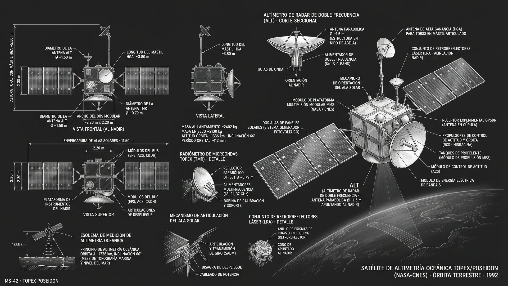

TOPEX/Poseidon

Midió la altura del mar con cuatro centímetros de precisión y retrató entero el gran El Niño de 1997. Iba a durar tres años y estuvo trece, hasta que se le bloqueó una rueda.
Perdió la capacidad de maniobrar al bloquearse su rueda de cabeceo el 9 de octubre; el último comando se le transmitió el 18 de enero de 2006, tras 13 años, 5 meses y 7 días de misión, y sigue en órbita a unos 1.336 km. Personas: Lee-Lueng Fu, Yves Menard, Mary Cleave
Lo que hizo
- Dos agencias, una misión — La NASA empezó a desarrollar Topex en 1979 y el CNES francés planeaba Poseidon por su cuenta. En 1983 fusionaron los dos proyectos en uno solo, lanzado el 10 de agosto de 1992.
- El mar, centímetro a centímetro — Mi altímetro de radar midió la altura de la superficie del océano con 4,2 cm de precisión y produjo los mapas globales de mareas más exactos hechos hasta entonces.
- El final — En diciembre de 2001 llegó mi sucesor Jason y volamos en tándem casi tres años. Una rueda bloqueada y el último comando del 18 de enero de 2006 cerraron la misión.
Modelo 3D, chat y cómic, en tres idiomas
Fuentes
- www.jpl.nasa.gov/news/nasas-topexposeidon-oceanography-mission-ends/
- sealevel.jpl.nasa.gov/missions/topex-poseidon/summary/
- www.jpl.nasa.gov/missions/topex-poseidon/
Ver el índice completo · Proyecto del NASA Space Apps Challenge 2026. Contenido con fuentes citadas.